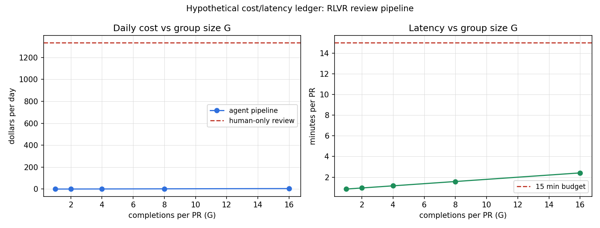

Capstone B: applied/FDE, RLVR code-review agent rollout
Capstone B: applied/FDE, RLVR code-review agent rollout
Date: 2026-10-06. Units: U14 (SFT), U15 (RLVR, reward validity), U17 (deployment gap map). Script: scripts/capstone_b_cost_model.py. Figure: figures/capstone_b_cost.png.

Status: HYPOTHETICAL scenario. The company, the PR volume, the prices, and the latency numbers are assumptions, not measurements. The course machinery (RLVR formulation, verifier design, PPO/GRPO updates, deployment gaps) is real and cited.
Discovery
A mid-size software company merges about 40 pull requests per day (assumption). Senior engineers spend roughly 25 minutes per PR on review (assumption). Reviews catch real defects, but reviewers are the bottleneck: PRs wait hours for a first look, and shallow reviews miss test gaps. The team asks: can a language-model reviewer do the first pass, so humans review the agent’s findings instead of raw diffs?
Workflow baseline
Today: author opens PR, CI runs unit tests, a human reviewer reads the diff, leaves comments, approves. Measured baseline to beat (to be collected in the pilot): median time to first human comment, defect escape rate to main, reviewer hours per PR. No baseline numbers are claimed here, the pilot measures them.
Objectives
- Cut median time to first substantive review comment.
- Keep the defect escape rate at or below the human-only baseline.
- Keep reviewer hours per PR flat or lower, counting time spent checking the agent.
Constraints
- The agent never merges. Humans hold the approve button.
- No training on proprietary code outside the company boundary.
- Review latency budget: 15 minutes per PR (assumption).
- The verifier (tests, lint, type check) is the reward signal. It must be independent of the model.
Proposed system
An RLVR-trained reviewer (U15 SL-02): the policy samples G completions per PR, each a review with findings. The verifier runs the test suite on the PR, checks that each finding cites a real line, and scores findings against hidden mutation tests (seeded bugs the reviewer should catch). Reward in [0, 1]: fraction of seeded bugs found, minus format penalties. KL penalty against the instruction-tuned base model (equation 18.2). GRPO over the G completions per PR (no critic to maintain).
Trust boundaries
- The model writes comments. It does not run code, push, or merge. Tool permissions end at read-only repo access plus the verifier sandbox.
- The verifier is owned by a separate team from the model team. The model team cannot edit the hidden mutation tests. This is the U15 source/reward confounding guard: the model must not write its own tests.
- Human approval is required for merge. The agent’s comments are advisory.
Alternatives considered
- SFT on historical review comments: cheaper, but learns comment style, not bug finding. Rejected as the primary method, kept as the cold-start baseline.
- Pure prompting (zero-shot reviewer): no training cost, but no improvement lever and no verifier grounding. Rejected for production, kept for the pilot’s control arm.
- Human-only with more hires: linear cost, no multiplying effect. Rejected on cost.
Acceptance gates
- Offline: on a held-out set of PRs with seeded bugs, the agent finds at least as many as the SFT baseline at matched compute.
- Verifier audit: the hidden mutation tests are reviewed by two engineers outside the model team. Reward validity (U15 SL-03) is signed off.
- Shadow mode: 2 weeks, agent comments visible only to the team, humans blind to which comments are agent-written. Metric: precision of findings.
- Canary: 10% of PRs, agent comments public, humans still approve. Metric: escape rate unchanged, time-to-first-comment down.
- Rollback tested once before canary: one config flag disables the agent in under 5 minutes.
Cost and latency
From scripts/capstone_b_cost_model.py (hypothetical inputs): at G = 4 completions per PR, the pipeline costs $1.16 per day in inference plus verifier compute, against $1,333 per day of human review time at the assumed rates. Latency 1.2 minutes per PR against the 15 minute budget. The honest reading: the agent does not replace human review, so the $1,333 is not “saved.” The real economic claim is reviewer amplification: the same review hours catch more defects because the first pass is done. That claim needs the pilot’s measured numbers, which do not exist yet.
Rollout
Phase 0 (weeks 1-2): collect the baseline metrics. Build the mutation-test verifier. Freeze the reward definition. Phase 1 (weeks 3-4): SFT cold-start on historical reviews. Shadow mode. Phase 2 (weeks 5-8): RLVR with GRPO on the verifier reward. KL from the base model tracked daily. Canary at 10%. Phase 3 (week 9+): full rollout if all gates pass, else rollback and postmortem.
Monitoring
- KL(pi || pi_ref) per day: spike plus rising reward means reward hacking (U15 SL-03).
- Finding precision sampled weekly by human audit.
- Escape rate to main, compared with the pre-rollout baseline.
- Verifier pass rate: a sudden jump means the verifier got easier, not the model better.
- Group diversity: distinct findings per PR. Collapse means the GRPO advantage signal is degenerate (U15 SL-12).
Rollback
One config flag disables agent comments and returns the workflow to human-only review. Tested in staging before canary. Owner runs it without approval in an incident.
Ownership and handoff
Model team owns the policy and the training pipeline. Developer productivity team owns the verifier and the mutation tests. A named on-call engineer owns review quality. Handoff document: this capstone plus the verifier audit sign-off and the rollback runbook.
Stakeholder defense
For the leadership team: the pilot costs two weeks of shadow mode and a small GPU budget, with a kill criterion at each gate. The risk is not model quality but reward validity: if the verifier is gamed, the metrics lie. That is why the verifier team is independent and why shadow mode measures finding precision blind. If the canary fails any gate, we keep the SFT reviewer as a writing assistant and stop.